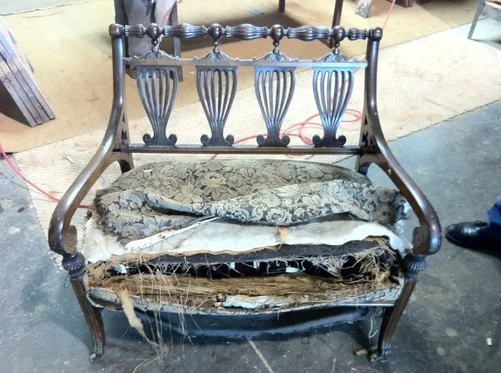

What restoration costs · Straight answers from the bench
What restoration costs.
There is no price sheet on the workshop wall, and that is deliberate: no two pieces arrive in the same condition, so no chart could quote them honestly. What we can do is show you exactly what moves the number — and then give you a real one, from a few photographs, for free.
Why we quote from photographs
The piece sets the price, not a chart.
Two dining tables of identical size can deserve very different quotes. One needs its finish stripped and rebuilt; the other needs that, plus re-glued joints and veneer coaxed back down. A price list would overcharge the first and underprice the second.
So we quote each piece on its own evidence. A few ordinary phone snapshots — the top, the legs, the damage up close — tell an experienced eye most of what the bench will find: how the old finish is failing, whether the joints have moved, what the veneer is doing at the edges.
The estimate itself is free and commits you to nothing. Email photos to estimates@refinishing.org, use the estimate form, or call 703-437-7446 and talk it through first.

Where the hours go
Five things that actually drive cost.
-
Size & surface
Restoration is priced in hours of handwork, and surface is where the hours go. A banquet table with leaves simply holds more stripping, sanding and finishing than a side chair — every square foot passes under the same hands, the same number of times.
-
Condition of the finish
A finish that has merely dulled asks far less of the bench than one that has blackened, alligatored or been through water. The photos tell us which we’re looking at — and whether the original finish can be preserved rather than replaced, which matters for antiques.
-
Structural repairs
Loose joints, wobbly legs, broken feet, drawers that no longer run true. Re-gluing a joint properly means taking it apart first, and a piece that must be partially disassembled and rebuilt carries more labor than one that only needs its surface renewed.
-
Veneer & inlay work
Lifting veneer, missing banding, marquetry with pieces gone — this is the slowest, most careful work in the shop, matching wood and grain so the repair disappears. It is also what most separates one quote from another on otherwise similar pieces.
-
The finish you choose
A durable lacquer for a table that must earn its keep is one answer; a traditional hand-rubbed finish for a period piece is another, and it takes longer to build. We’ll recommend what suits the piece and how you live with it — the choice is yours.
What moves a reupholstery quote
Two questions: the fabric, and the frame.
Reupholstery cost comes down to what you put on the piece and what we find underneath it.
The fabric is usually the largest single line — the yardage a piece takes is fixed by its shape, but the grade of cloth is entirely your choice, and the range is wide.
The frame is the part the photographs help us read. A sound frame with simple lines costs far less than a piece that needs re-gluing, new webbing and springs before a yard of fabric goes near it. If a frame doesn’t deserve the investment, we’ll say so before the fabric is ever ordered.
More on the craft itself on the upholstery page.


What the money buys
Where the number goes.
A quote is easier to weigh when you can see the work inside it. One serpentine chest, three stages — every one of them hours at the bench, by hand.


{kind=link}
{kind=link}
† More of the work, stage by stage, in the gallery and projects.
Included with every quote
What’s included — and when we say don’t.
The estimate is free. Send photos and a short description; a real, no-obligation number comes back quickly. No visit fee, no deposit to find out.
Pick-up & delivery, arranged for you. Quoted with your estimate — approve it and we collect the piece from your home — and return it restored — throughout Washington DC, Maryland and Virginia; the cost is quoted with your estimate.
DC · MD · VA
You pay on delivery. We take no payment up front. The bill comes due when the piece is back in your home and you’ve seen it — and you’re more than satisfied.
Nothing up front
Sometimes the honest answer is “don’t.” When the cost of the work would outrun what a piece is worth — in the market or in the family — we say so before a dollar is spent.
* The estimate obliges you to nothing. More than 70% of our business is clients coming back — or the people they sent.
Asked, and answered
What clients ask about cost.
How much does it cost to refinish a dining table?
It depends on size, condition and the finish you choose — which is why we quote from photographs rather than a price sheet. As a very rough national range, a full strip-and-refinish of a dining table runs from several hundred dollars up past a thousand for large or damaged pieces. Send photos and we’ll give you a real number, quickly and for free.
Why don’t you publish a price list?
Because no two pieces arrive in the same condition. Two tables of identical size can honestly deserve very different quotes — one needs its finish revived, the other needs joints re-glued and veneer laid back down. A chart would overcharge the first and underprice the second. A few photographs let us quote the piece in front of us, and that estimate is free.
Do I pay anything up front?
No. The estimate is free, there is no obligation, and we take no payment up front. Pick-up and delivery are available throughout Washington DC, Maryland and Virginia, quoted with your estimate, and you pay on delivery — when you’ve seen the piece and you’re more than satisfied.
Will you tell me if a piece isn’t worth restoring?
Yes — before a dollar is spent. When the cost of the work would outrun what the piece is worth to you, in the market or in the family, we say so in the estimate. It costs us jobs and it keeps our clients; more than 70% of our business comes from people who returned, or were sent by someone who did. If you’re weighing it, start with our guide: Is it worth restoring?
Skip the guesswork. Send photos.
A few phone snapshots and a short description are all it takes — we’ll come back quickly with an honest quote on the piece in front of us, not a piece like it.